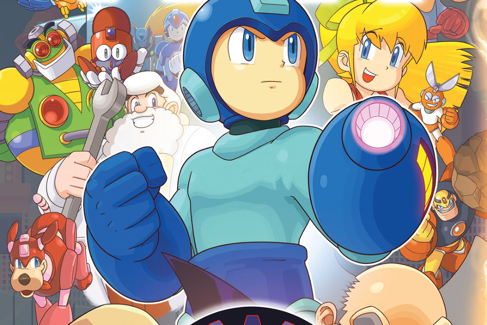

Capcom เตรียมฉลองครบรอบ 30 ปี Rockman เผยจะมีเซอร์ไพรส์รออยู
มากกว่า 9000 ชม. ที่แล้ว

เป็นซีรี่ย์ที่เกมเมอร์หลายคนตั้งเฝ้ารอคอยว่าอาจจะกลับมาสักวัน แต่ถ้ามองความเป็นจริงคุณ Keiji Inafune ผู้ให้กำเนิดเจ้าหุ่นกระป๋องสีฟ้า Mega Man ได้ลาออกจากค่าย Capcom ไปแล้ว ซึ่งก็ได้ไปรวมทีมขึ้นมาใหม่กลายเป็น "Level-5 Comcept" แล้วพัฒนาเกม Mighty No. 9 ออกมาให้ได้เล่นกัน ซึ่งกระแสของเกมเมื่อวางจำหน่ายจริงก็พบว่ามันแตกต่างจากรายละเอียดในตอนแรกที่เปิดเผยในช่วงแรก ย้อนกลับมาเนื้อหาข่าวกันต่อ ตอนนี้ทาง Capcom กำลังเตรียมถ่ายทอดสดฉลองครบรอบ 30 ปีของเจ้าหุ่นกระป๋องสีฟ้า Mega Man ในวันที่ 5 ธันวาคมนี้เวลา 02.00 น.ตามเวลาในประเทศไทย โดยพวกเขาก็ให้ว่าจะมีการเปิดเผยข้อมูลที่คุณไม่ควรพลาด

แหล่งข้อมูลจาก onkami